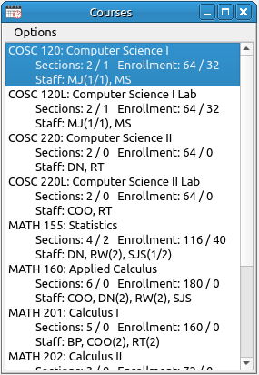

Courses Window
The Courses window shows the list of all courses in the course database as well as the number of sections being offered for each course in the current schedule, the maximum enrollment for the course and who is teaching the course. This window is where the scheduling all starts, assignment of courses to professors is done by dragging the course from this window to the Course/Faulty Assignments window.

- For the number of sections the first number id the number of non-tentative sections, the second is the number of tentative sections. So in the above example COSC 120 has 2 true sections and 1 tentative section. MATH 155 has 4 real sections and 2 additional tentative sections.
- The enrollment is similar with the first number being the maximum enrollment for the non-tentative sections and the second number is the maximum enrollment for the tentative sections. So in the example above COSC 120 currently can support 64 students and if we make the section that is tentative a real section we will gain 32 more seats for a total of 96 students. Similarly, MATH 155 currently can take 116 students with an additional 40 possible if we convert the two tentative sections to real sections.
- The staffing line shows the short designation for the instructor followed by the number of sections and tentative sections they have been assigned. So in the above example, under MATH 155, DN has one section, RW has two sections, and SJS has one true section with two tentative sections assigned to them. For COSC 120, MJ has a true section and one tentative, MS has one section. If an instructor (say DN) had two tentative sections of a class and no true sections the listing would look like DN (0/2).
Options:
- Add New Courses: This invokes the new course input dialog to add in new courses to the course database.
- Edit Course: This will open the course input dialog but with only one line and the data of the currently selected course loaded into the cells. Edit the fields as desired and click the OK button to finish editing.
- Delete Course: This will delete the currently selected course. If any classes in the schedule are of this course they will be removed from the schedule.
- Expanded Course Display: This is a toggle between expanded and condensed mode for the course display. Expanded mode uses a line for the title, one for the sections and enrollment, and one for the staffing. In condensed mode all this information is on a single line.